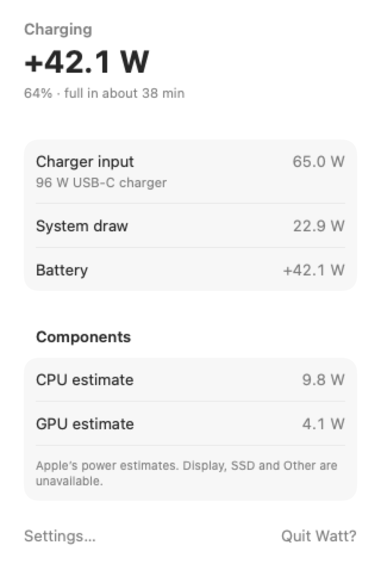
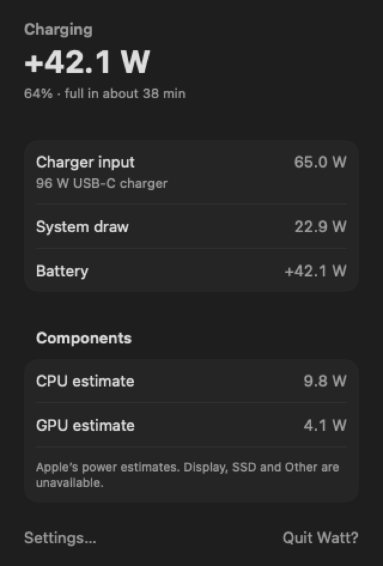
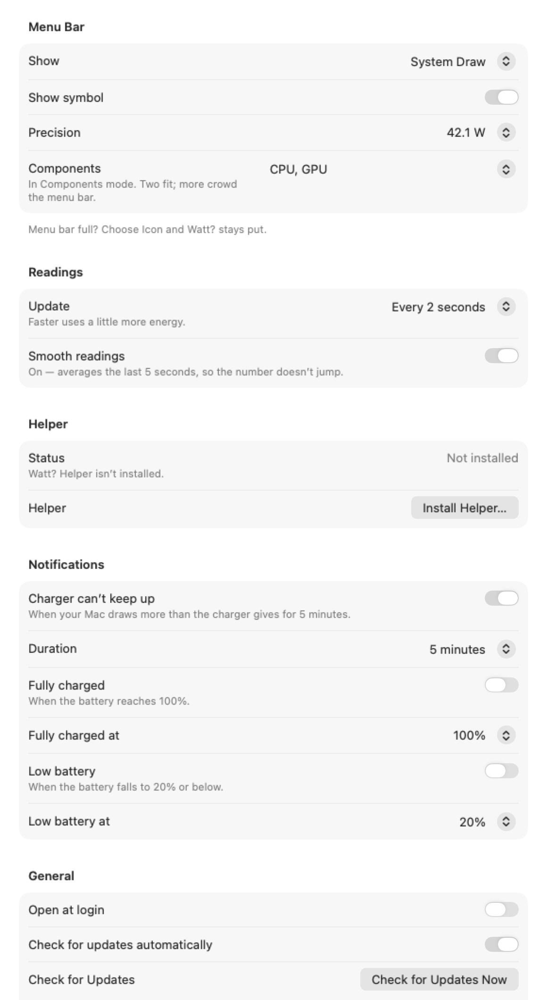
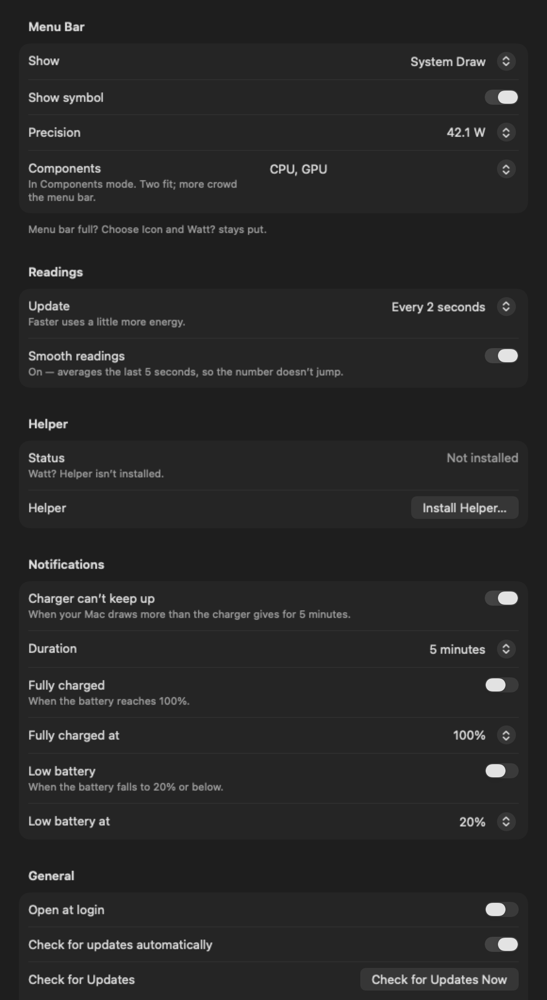

Native macOS menu-bar app that shows live charger, system and battery power in watts.
Install
Homebrew
brew install --cask ben-ranford/tap/wattFirst launch from a download
Watt is ad-hoc signed and is not notarised, so Gatekeeper blocks the first launch of a zip or disk image. In Finder, Control-click Watt and choose Open, then choose Open. If macOS still blocks it, open System Settings → Privacy & Security and choose Open Anyway.
The Homebrew cask removes com.apple.quarantine from the installed Watt.app after install, so that first-launch block does not apply to a cask install.
What it looks like
Menu bar, panel, and Settings, in light and dark. Rendered from the SwiftUI views with sample power readings.




Features
- A menu-bar status item for the reading you pick: system draw, battery delta, charger input, per component, or the icon alone.
- A panel with charger input, system draw, and battery power.
- CPU and GPU estimates when you install the helper and macOS has approved it.
- Precision, update interval, and smooth readings. Smooth readings average the last 5 seconds.
- Notifications when the charger cannot keep up for 5 minutes, and when the battery is full.
- Updates are accepted only after the Ed25519 signature and the archive digest check out.
What it is, and what it is not
Watt is
- A native macOS menu-bar app, written in SwiftUI. It has no Dock icon.
- A live view of charger input, system draw, and battery power, in watts. It needs macOS 13 or later.
- Optional CPU and GPU estimates from Apple’s powermetrics, through a root helper you choose to install.
- Free software. The source is published under the MIT licence.
Watt is not
- A full component breakdown. Display, SSD, and Other are not provided. The menu bar shows at most two components, and only CPU and GPU.
- Developer ID signed or notarised. Gatekeeper blocks the first launch of a zip or disk image. A Homebrew install does not have that block.
- A battery-health, charge-limit, or fan-control utility.
- A package that installs the helper for you.
brew installplaces Watt.app in Applications. The helper is a separate step in the app.